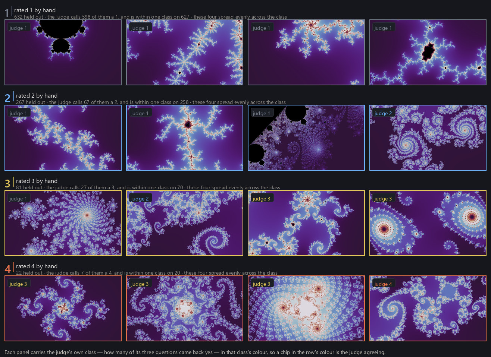
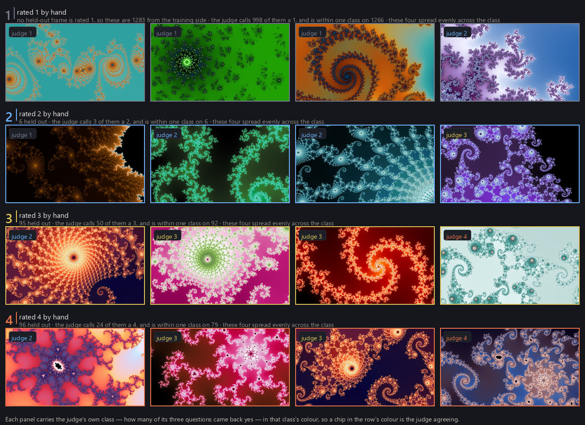
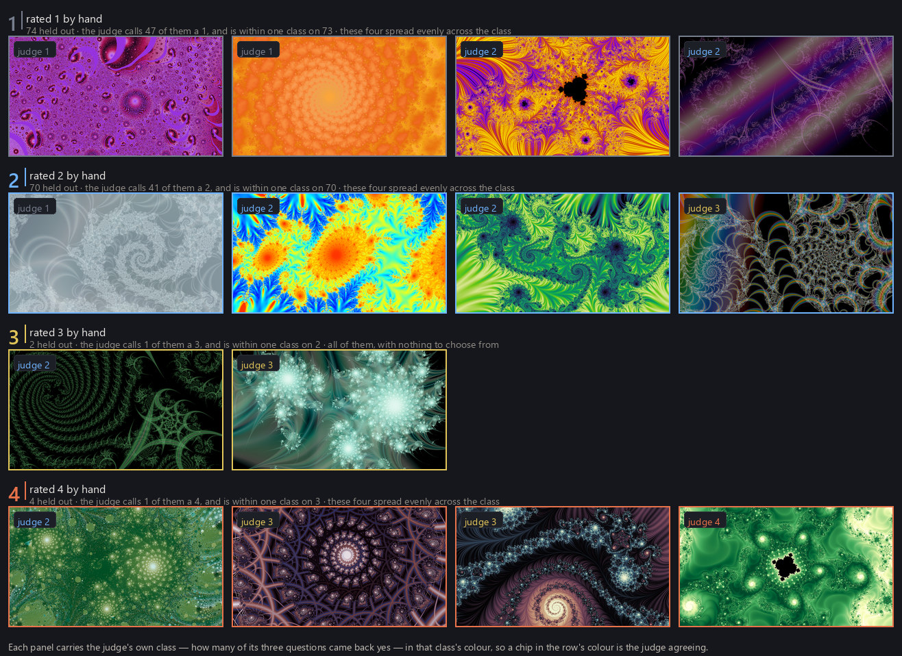

Finding good locations used the location judge on every candidate frame without saying where it came from. This page describes the judges: the ratings they are trained on, the networks, how they are evaluated, and where they generalize and where they do not. Three judges answer quality questions — one for locations and two for finished renders — and they share one rating scale, one network design, and one training recipe. A fourth, smaller network chooses palettes rather than rating quality; it is trained by a different method and is covered in Color palettes.
The rating scale
Every judge is trained on ratings made by hand on the same four-point scale. A 1 is junk: empty, black, or noise. A 2 is unremarkable — something is there, nothing worth keeping. A 3 is good wallpaper material. A 4 is exceptional. The top class is just a class, not a separate bar: nothing in the pipeline treats a 4 differently except to prefer one where it is available.
A few extremes are obvious — a frame that is practically all black, or practically flat — and everything else depends on taste and on use. I rated everything according to my own preferences for desktop wallpapers, so the judges are trained toward one person's taste; fine-tuning them toward a different taste would be straightforward, and the labeled datasets are published for exactly that purpose (Overview).
What is rated differs by judge. A location rating asks whether a place could make a good wallpaper, so the rating is made from two renders of it at once — one in the neutral palette the judge will see, and one in a vivid palette that shows what the geometry can become — and answers for the geometry, not for either picture. A render rating asks whether this picture is worth keeping, and is made from exactly the picture that was rendered: its mode, its settings, its palette. The corpus holds ratings for nearly twelve thousand locations, about five thousand smooth renders, and about three thousand renders in the other modes.

The ratings were gathered iteratively: rate a few hundred, retrain, use the new judge to explore further, and repeat across fractal families, locations, and descent strategies. That history leaves a bias — the judges know best the regions the search has already visited — and the bias shows up downstream as a narrower distribution of final wallpapers than the fractals themselves would support. The last section returns to this.
What the judge sees
The location judge sees a small render of the frame in one fixed neutral palette, and nothing else. It is the same render the walk's gates examined — 384 by 216 pixels, one sample per pixel — so no larger render is drawn for scoring. Ratings, by contrast, are made from full-size renders, and the project uses one intermediate size as well. Rather than pick one, the judge is trained on all three sizes of the same locations, so its verdict does not depend on which resolution it is shown. Convolutional networks turn out to be good at this: composition, framing, and density survive downsampling well, and a judge that has only ever seen the thumbnail still recovers most of what a person sees at full size.

The two render judges see the actual picture, stretched to the network's input size, palette included. They divide the catalog as Rendering modes described: the smooth judge handles the plain smooth rendering and the mode judge handles the seventeen other production modes. A judge trained on smooth renders would have something to say about the others — the two questions overlap — but they are trained independently, on their own ratings, because what makes a classic smooth render good is not quite what makes an engraved or thread-laced one good.
Network design and training
The network is small on purpose. Each judge is a MobileNetV4 convolutional network pretrained on ImageNet — about eight million parameters for the location and smooth judges, a variant a third that size for the mode judge — with its final layer replaced and the whole network then fine-tuned on the ratings. This is standard transfer learning, and a reader who wants the mechanics will find them in any introductory treatment (for example the PyTorch transfer-learning tutorial); nothing in the recipe is unusual. Larger architectures were tried, including vision transformers; none beat MobileNetV4 by more than noise, and it was the fastest and smallest, so it stayed.
The one choice that fits the problem specifically is the training target. A four-point rating is ordered, not categorical: a 3 is closer to a 4 than a 1 is, and an ordinary classifier discards that. The judges are trained by ordinal regression instead — three yes-or-no questions, "at least a 2?", "at least a 3?", "at least a 4?", each asked only of pictures that already passed the one before, so the three answers can never contradict each other. Multiplying them gives the probabilities the pipeline uses: P(≥3), the chance a picture would be rated at least good, and P(≥4), the chance it would be rated exceptional. The walk's floors on the previous page are thresholds on the first of those.
The rest of the recipe is ordinary: forty epochs, a cosine learning-rate schedule, under two hours on one GPU for the location judge and under an hour for each of the others. Augmentation is conservative, and deliberately color-preserving, because the palette is part of what was rated. The location judge sees small border crops, flips, re-encoding, and brightness and contrast changes of a few percent — never a change of hue or saturation. The two render judges see crops and flips only.
Evaluating a judge
A judge is evaluated on ratings it never trained on, and the held-out set has to be drawn without the judge's help: a set of locations a judge scored well is not a test of that judge. The held-out sets are therefore drawn by methods that never consult a score — a uniform draw over a parameter plane with no gate in front of it, a systematic sweep of a family's parameter space, a uniform draw over everything one walk recorded — and held out by neighborhood rather than by frame, because nearby frames are near-duplicates and a judge could otherwise pass by memorizing a location's neighbor.
The figures below show held-out results for each judge: one row per human rating, four examples spread evenly across each row's own held-out set, and the judge's own verdict marked on every panel. Where a rating has fewer than four held-out examples the row is short rather than padded. The agreement is good, and where the judge disagrees it is nearly always by one step — the same shape the human ratings take, since two ratings of the same frame rarely differ by more than one class.



Each judge's probabilities are also checked against the held-out ratings for calibration. They are not always well calibrated — a raw P(≥3) of 0.5 is not reliably even odds — so the pipeline treats a judge's output as a ranking and sets its thresholds separately, which is the subject of the next section.
From a score to a decision
A judge returns a probability; the pipeline acts on thresholds. Where each threshold comes from matters, because a judge's numbers shift every time it is retrained.
The location judge has three thresholds: two on P(≥3), and one on P(≥4). Above the admission floor a frame is recorded as a find; between the expansion floor and the admission floor it may be explored through but is not a find; and above a separate great cut — the one read on P(≥4) — a find is counted as exceptional when the supply is balanced across partitions, the buckets the project keeps its books in: one per family at one degree, with a parameter plane counted apart from its dynamical twin (From locations to wallpapers). Each was set once, and after every retrain the three are restated by volume: over a fixed reference pool of tens of thousands of locations, the new threshold is the score on the new judge that passes the same fraction of the pool as the old threshold passed on the old judge, rounded down so that a restated floor never removes supply the old one admitted. The restatement reads no ratings; it preserves how much flows, not which frames. The "about 0.4" and "about 0.1" on the previous page are the current restated floors.
The two render judges act differently. The mode judge carries a release bar that was read off ratings directly: the score above which a picture had been rated at least good more often than not, found by fitting a monotone curve through the three thousand rated pictures, and rounded up, because a bar is a floor. A slot for one of those modes with no picture over the bar is left unfilled rather than padded. The smooth judge carries only an advisory at its natural midpoint; it can rank, it cannot remove. When the two judges' pictures are ranked together for selection, their probabilities are never compared with each other or across partitions: each picture is ranked within its own partition and judge, and the lists are interleaved by position — every partition's best, then every second-best. Every threshold is stamped with the exact judge it was measured on, and a threshold is never applied to a judge it was not measured against.
Generalization and its limits
The aim of a judge is not to memorize the neighborhoods that have already been rated but to learn what makes a frame good — composition, framing, density, a more general sense of aesthetics — well enough to recognize it somewhere new. The judges do this to a useful degree: they have rated highly, and correctly, frames in regions and at depths unlike anything in their training data, and the search depends on that.
The limits are real and follow from how the ratings were gathered. A judge trained iteratively on the harvest of its predecessors is surest about the regions the search has already visited, and least sure about the rest; the bias noted above is this one. Searching for beautiful things with a learned judge therefore needs care: if the judge's taste drifts toward what it has already seen, the search narrows to the regions the corpus already covers. The walk's reserved share of every batch for untouched roots (Finding good locations, Prioritize) exists for this reason, and the same concern governs how new batches of locations are chosen for rating.